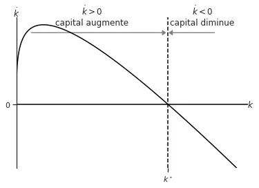

5 Exercises
5.1 Modèle de Solow
5.1.1 Exercise 1
Fonction de production néoclassique. Montrez que la fonction de production de type Cobb-Douglas satisfait les conditions d’une fonction néoclassique.
Solution:
Les propriétés d’une fonction de prodcution néoclassique sont les suivantes:
- Homogène de degré 1.
- Est croissante dans les facteurs de production.
- Montre des rendements décroissants.
- Satisfait les conditions d’Inada.
Ainsi, si la fonction de production est \(F\left[K, L\right] = K^\alpha L^{1-\alpha},\, \alpha \in (0,1)\), l’application directe de la définition d’homogénéité de premier degrée donne:
\[ F[\lambda K, \lambda L] = \left(\lambda K\right)^\alpha \left(\lambda L\right)^{1-\alpha} = \lambda^\alpha K^\alpha \lambda^{1-\alpha} L^{1-\alpha} = \lambda K^\alpha L^{1-\alpha} = \lambda F[K, L]. \]
La fonction est aussi croissante dans les facteurs de production.
\[\frac{\partial F[K,L]}{\partial K} = \alpha K^{\alpha-1}L^{1-\alpha} > 0.\]
\[\frac{\partial F[K,L]}{\partial L} = (1 - \alpha) K^{\alpha}L^{-\alpha} > 0.\]
Les facteurs montrent des rendements décroissants.
\[\frac{\partial^2 F[K,L]}{\partial K^2} = \alpha (\alpha - 1) K^{\alpha-2}L^{1-\alpha} < 0.\] \[\frac{\partial^2 F[K,L]}{\partial K^L} = (1 - \alpha)(-\alpha) K^{\alpha}L^{-\alpha-1} < 0.\]
Finalement, les conditions d’Inada sont les respectées:
\[\lim_{K\rightarrow 0}F^\prime_{K} = \lim_{L\rightarrow 0}\alpha K^{\alpha-1}L^{1-\alpha} = \infty\] \[\lim_{L\rightarrow 0}F^\prime_{L} = \lim_{L\rightarrow 0}(1-\alpha) K^{\alpha}L^{-\alpha} = \infty\] \[\lim_{K\rightarrow \infty}F^\prime_{K} = \lim_{L\rightarrow \infty}\alpha K^{\alpha-1}L^{1-\alpha} = 0\] \[\lim_{L\rightarrow \infty}F^\prime_{L} = \lim_{L\rightarrow \infty}(1-\alpha) K^{\alpha}L^{-\alpha} = 0\]
5.1.2 Exercise 2
Montrez que, si les facteurs de production (travail et capital) sont remunerés à leur taux marginal, la remuneration total épuise la production. C’est-à-dire, montrez que \(wL + rK = Y = F(K,L).\)
Solution:
En un premier temps, on peux se contenter d’évoquer le théorème d’Euler à propos des fonctions homogènes. Il dit que, si \(F(K,L)\) est une fonction homogène, alors \(F^\prime_K K + F^\prime_L L = \lambda F(K,L).\)
Comme la fonction de production est homogène de premier degré, \(\lambda = 1\) et on retrouve ce qu’on cherche:
\[ \overbrace{F^\prime_K}^{r} K + \overbrace{F^\prime_L}^{w} L = F(K,L). \]
Ainsi, le totale des payements épuise la production.
Il est possible de montrer cela d’une autre manière en partant de \(wL +rK\) et utilisant les valeurs \(w = f(k) - f^\prime(k) k\) et \(r = f^\prime(k).\)
En effet, si l’on divise \(wL + rK\) de \(L\), on obtient \(w + rk = f(k) - f^\prime(k) k + f^\prime(k) k = f(k).\) Comme \(F(K,L) = Lf(k)\), on a \(Lf(k) = wL + rK.\)
5.1.3 Exercise 3
Avec une fonction de production de type Cobb-Douglas où \(Y=K^\alpha L^{1-\alpha},\, \alpha \in (0,1)\), montrez que:
- La fonction d’accumulation de capital suit \(\dot{k} = sk^\alpha -(n+\delta)k\).
- L’économie a deux états stationnaires: \(k^\star_0 = 0\) et \(k^\star_1 = \left(\frac{s}{n+\delta}\right)^\frac{1}{1-\alpha}.\)
- L’économie ne converge pas vers le premier état stationnarie mais elle converge vers le deuxième.
Solution:
Pour trouver la fonction d’accumulation du capital en termes intensives il est nécessaire d’exprimer la production en termes intesifs. Ainsi:
\[ y \equiv \frac{Y}{L} = \frac{1}{L}K^\alpha L^{1-\alpha} = k^\alpha. \]
Le capital total s’accumule selon \[ \dot{K} = sF(K,L)-\delta K. \]
Par conséquent, \[ \left(\dot{\frac{K}{L}}\right) = \frac{\dot{K}L-\dot{L}K}{L^2} = \frac{sK^\alpha L^{1-\alpha}-\delta K}{L} - n k = sk^\alpha - (n+\delta)k. \]
L’état stationnaire est la valeur \(k\) telle que \(\dot{k} = 0\). Par conséquent:
\[ \dot{k} = 0 \implies sk^\alpha = (n+\delta)k \implies k^\star_0 =0 \]
ou \[ k^\star_1 = \left(\frac{s}{n+\delta}\right)^\frac{1}{1-\alpha}. \]
Nous pouvons montrer la convergence vers chaque état stationnaire comme suit:
Prenons le premier, \(k^\star_0 = 0\). Quand \(k\) est proche de cette valeur, \(\dot{k}\) prends des valeurs importants:
- Avec le diagram de phase ci-dessous, on voit que quand \(k\) est positive et proche de 0, \(\dot{k} > 0.\) Comme \(k\) est proche de 0, la productivité du capital est importante et, par conséquent, une petite augmentation de celui-ci augmente beaucoup la production (car \(\lim_{k \rightarrow 0}f^\prime(k) = \infty\)). De l’autre coté, \((n+\delta)k\) ne va pas beaucoup augmenter car le terme est linéaire en \(k\).
- Selon le thèorem de Hartman-Grobman \(\frac{\partial \dot{k}}{k} = s \alpha \frac{1}{k^{1-\alpha}} - (n+\delta).\) Si l’on évalue la dérivée à \(k = 0\), on obtient \(+\infty\), et donc, on s’éloigne de cet état stationnaire.
En conclusion, \(\dot{k} > 0\) quand \(k\) est proche de 0. Ainsi, si une économie commence avec peu de capital, elle va en accumuler.
Le deuxième état stationnaire \(k^\star_1 = \frac{s}{n+\delta}^\frac{1}{1-\alpha}\).
- Avec le diagram de phase, si on bouge à droite de l’état stationnaire on a \(\dot{k} < 0\). Ceci est dû au fait qu’augmenter le capital génère plus de production, mais d’une manière décroissante (rendements marginaux décroissants). En revanche, la dépréciation est linéaire en \(k\) et affecte le capital de la même manière indépendamment de son niveau. Ainsi, on ajoute une petite augmentation de la production, qui va se traduire par une petite augmentation de l’épargne, mais on perd plus à cause de la dépréciation. L’effet total est donc une diminution du capital \(\dot{k} < 0.\) Donc, si on passe au-delà de l’état stationnaire, on perd du capital et donc on y revient. La même analyse peut se faire quand \(k\) est légèrement inférieur à \(k^\star_1\).
- Selon le thèorem de Hartman-Grobman \(\frac{\partial \dot{k}}{k} = s \frac{1}{k^{1-\alpha}} - (n+\delta).\) Si l’on évalue la dérivée à \(k = \left(\frac{s}{n+\delta}\right)^\frac{1}{1-\alpha}\), on obtient \((\alpha-1) (n+\delta) < 0\). Ainsi, autour de l’état stationnaire, on s’en approche.
En conclusion, quand on est proche de \(k^\star_1\), si l’économie a un niveau de capital légerement inférieur, elle va en accumuler. Et au contraire, si l’économie a un niveau de capital légèrement supérieur, elle va en perdre. Ainsi, l’économie converge vers l’état stationnaire \(k^\star_1.\)

5.1.4 Exercise 4
Imaginez que, suit à une décision politique, les ménages épargnent davantage. Si on suppose qu’avant le changement l’économie était à son état stationnaire, quelles sont les consequèneces de l’augmentation du taux d’épargne? Expliquez les effets sur le capital par tête et la consommation par tête à court à long terme. Pour simplifier, imaginez que la technologie ne s’ammeliore pas.
Solution:
Suite au changement, l’économie accumule davantage de capital. En effet, à l’état stationnaire (situation initiale) on avait que
\[ \dot{k_0} = sf(k_0) - (n+\delta)k_0 = 0. \]
Si \(s\) augmente, \(\dot{k} > 0\) car \(\frac{\partial \dot{k}}{\partial s} = f(k_0) > 0\) et le capital par tête s’accumule. La consommation à l’état stationnaire était donnée par \(c = (1-s)f(k)\). Avec l’augmentation de \(s\), la consommation diminue.
À longue terme, un nouveau état stationnaire est atteint. Ceci montrera un niveau de capital par tête plus élevé car l’économie a accumulé davantage de capital. En effet, le niveau de capital stationnaire est défini par
\[ \frac{f(k)}{k} = \frac{n+\delta}{s}. \]
Ainsi, si \(s\) augmente la partie droite diminue, et donc, la partie gauche doit diminuer aussi. Le comportement de la partie gauche vient donné par
\[ \frac{\partial \frac{f(k)}{k}}{\partial k} = \frac{f^\prime(k)k - f(k)}{k^2} = - \frac{w}{k^2} < 0. \]
Par conséquence, comme la partie gauche doit diminuer, il faut que \(k^\star\) augmente.
La consommation à l’état stationnaire était donnée par
\[ c = f(k) - (n+\delta)k \] car \(sf(k) = n + \delta k\).
Cette fonction a une forme d’U inversé car \(f^\prime(k) - (n+\delta) > 0\) quand \(k\) est petit et \(<0\) quand \(k\) est grand. En plus, \(f^{\prime \prime} < 0.\) Ainsi, suite à l’augmentation de \(s\), si à l’origine la consommation était supériore au niveau d’or (\(c^{\text{gold}} \implies f^{\prime}(k) = n+\delta\)) \(k^{\star}\) augmente. Par conséquent, \(f^\prime(k)\) diminue et la consommation diminue. Ceci est une application de la règle d’or: si la consommation stationnaire excede la consommation d’or, une diminution du taux d’épargne permet d’augmenter la nouvelle consommation stationnaire.
Si, au contraire, la consommation stationnaire initiale était inferieure au niveau d’or, l’augmentation de \(s\) peut augmenter la nouvelle consommation stationnaire, ou la diminuire.
Il est important noter qu’à long terme, le capital par tête cesse d’augmenter et que le taux de croissance du capital sera toujours le même qu’avant le changement: \(\frac{\dot{K}}{K} = n.\)
5.1.5 Exercise 5
Dans le cadre du modèle de Solow (sans croissance exogène), montrez que deux états stationnaires existent.
Solution:
L’état stationnaire est définit comme la situation telle que \(\dot{k} = 0\). Dans le modèle simple,
\[ \dot{k} = sf(k)-(n+\delta)k. \]
Ainsi, l’état stationnaire implique
\[ sf(k) = (n+\delta)k. \]
On voit que, si \(k^\star = 0\), l’écononomie est stationnaire car \(f(0) = 0\) (hypothèse d’essentialité). Ce état stationnaire n’est pas très interessant car sans capital la production est égale à \(0\), et sans production la consommation est également nulle.
Un deuxième état stationnaire avec \(k^\star > 0\) existe. La démonstration est plus simple si, en lieu de chercher à resoudre \(\dot{k} = 0\), on cherche à résoudre \(\frac{\dot{k}}{k} = 0\). Comme \(k^\star > 0\), la division de \(\dot{k}\) par \(k\) est possible.
Nous cherchons un \(k^\star\) tel que
\[ \frac{\dot{k}}{k} = s\frac{f(k)}{k} - (n+\delta) = 0. \]
Si on dénote par \(H(k) = \frac{\dot{k}}{k} -(n+\delta)\), nous avons que:
\[ \lim_{k\rightarrow 0} H(k) = +\infty \]
Cépendant,
\[ \lim_{k\rightarrow 0} \frac{sf(k)}{k} - (n+\delta) \]
est indéterminée (type \(\frac{0}{0}\)). En applicant la règle de l’Hôpital, la limite est equivalent à
\[ \lim_{k \rightarrow 0} \frac{sf^\prime(k)}{1} = +\infty \]
à cause des conditions d’Inada. Ainsi, quand \(k \to 0\), \(H(k)\) est positive.
En revanche,
\[ \lim_{k \rightarrow \infty} H(k) = - (n+\delta) < 0. \]
Enfin, la fonction \(H(k)\) est continue. Selon le théorème des valeurs intermédiaires, il existe au moins une valeur \(k^\star > 0\) telle que \(H(k^\star) = 0\).
Nous pouvons aussi montrer de manière simple qu’il n’existe qu’une seule telle valeur. Pour ce faire, il suffit de montrer que la fonction \(H(k)\) est strictement decroissante. En effet,
\[ \frac{\partial H(k)}{\partial k} = s\frac{f^\prime(k)k - f(k)}{k^2} = (-1) s\frac{f(k) - f^\prime(k)k}{k^2} = (-1)s\frac{w}{k^2} < 0. \]
5.1.6 Exercise 6
Imaginez que la fonction de production est donnée par \(Y = AK + BL\).
- Est-ce que cette fonction de production est néoclassique?
- Quelles sont les conditions des fonctions néoclassiques qui ne sont pas satisfaites?
- Écrivez la fonction d’accumulation de capital pour le modèle de Solow.
- Sous quelles conditions l’économie converge vers un état stationnaire?
- Sous quelles conditions l’économie montre croissance endogène (sans fin)?
Solutions:
No, la fonction de production n’est pas néoclassique.
Les rendements sont constants pour chaque facteur: \[ F^{\prime \prime}_{K}(K, L) = 0, \] \[ F^{\prime \prime}_{L}(K, L) = 0 \] Cela implique que les conditions d’Inada ne sont pas réspectées, nottamment \(\lim_{K\to \infty}F^\prime_{K} = \lim_{L\to \infty}F^\prime_{L} = 0\).
Le capital continue de s’accumuler comme toujours: \(\dot{K} = sF(K,L) - \delta K.\) Ainsi, si \(k \equiv \frac{K}{L}\), nous avons que
\[ \dot{k} = \frac{\dot{K}L - \dot{L}K}{L^2} = s(Ak + B) - \delta k - n k. \]
Et donc,
\[ \dot{k} = s(Ak + B) - (n+\delta)k. \]
Le taux de croissance du capital par tête est:
\[ \frac{\dot{k}}{k} = sA - \delta + \frac{sB}{k} \]
Le niveau de capital par tête stationnaire est: \[ \dot{k} = 0 \implies k^\star = (-1)\frac{sB}{sA-\delta}. \]
On voit déjà que si \(sA - \delta > 0\) alors \(k^\star < 0.\) En plus, pour converger vers l’état stationnaire il est nécessaire que:
- Quand \(k\) est petit, le taux de croissance soit positive (typiquement grand).
- Quand \(k \to \infty\), le taux de croissance soit négative (quand \(k\) est trop grand, l’économie perd du capita). Avec \(\frac{\dot{k}}{k} = sA - \delta + \frac{sB}{k}\), on a:
\[ \lim_{k \rightarrow 0} \dot{k} = +\infty \]
\[ \lim_{k \rightarrow \infty} \dot{k} = sA - \delta \] Ainsi, pour avoir convergence il faut que
\[ sA - \delta < 0, \] autrement dit \(sA < \delta.\) En plus, avec cette condition, \(k^\star > 0.\)
Si l’économie a un taux de croissance toujours positive, elle a une croissance endogène. Dans ce cas là, il faut vérifier sous quelles conditions \(k\) ne cesse jamais d’augmenter. Comme \(\frac{\dot{k}}{k} = sA - \delta + \frac{sB}{k}\), il suffit que \(sA - \delta > 0\).
5.1.7 Exercice 7
Supposez que la fonction de production est de type CES:
\[ F(K,L) = (\alpha K^\rho + (1-\alpha) L^\rho)^\frac{1}{\rho}. \]
Déterminez la fonction de production équivalente en termes intensifs et calculez le salaire et le taux d’intérêt.
Solution:
Si la fonction de production est \[ F(K,L) = (\alpha K^\rho + (1-\alpha) L^\rho)^\frac{1}{\rho}, \] en termes intensifs, nous aurons:
\[\begin{align*} &y \equiv \frac{Y}{L} = \frac{(\alpha K^\rho + (1-\alpha) L^\rho)^\frac{1}{\rho}}{L} \\ &y = L^{-1}(\alpha K^\rho + (1-\alpha) L^\rho)^\frac{1}{\rho} \\ &y = L^\frac{-\rho}{\rho} \left(\alpha K^\rho + (1-\alpha) L^\rho\right)^\frac{1}{\rho} \\ &y = \left(L^{-\rho}\left[\alpha K^\rho + (1-\alpha) L^\rho\right]\right)^\frac{1}{\rho} \\ &y = \left(\alpha k^\rho + (1-\alpha) \right)^\frac{1}{\rho} \end{align*}\]
Le salaire et le taux d’intérêt peuvent être calculés en termes intensifs utilisant les définitions:
\[\begin{align*} r &= f^\prime(k) = \alpha k^{\rho-1}\left(\alpha k^\rho + (1-\alpha) \right)^{\frac{1}{\rho}-1} \\ w &= f(k) - f^\prime(k) k = \\ &= \left(\alpha k^\rho + (1-\alpha) \right)^{\frac{1}{\rho}} - \alpha k^{\rho-1}\left(\alpha k^\rho + (1-\alpha) \right)^{\frac{1}{\rho}-1} = \\ &= \left(\alpha k^\rho + (1-\alpha)\right)^{\frac{1}{\rho}-1}\left(\textcolor{red}{\alpha k^\rho + (1-\alpha) - \alpha k^\rho})\right) =\\ &= \textcolor{red}{(1-\alpha)}(\alpha k^\rho + (1-\alpha))^{\frac{1}{\rho}-1} \end{align*}\]
5.1.8 Exercise 8
Si le taux d’intérêt d’un pays qui se trouve à l’état stationnaire est inférieur à \((n+\delta)\), quelle politique pourriez-vous proposer pour augmenter la consommation du pays de manière à ce que toutes les générations y gagnent?
Solution:
La règle d’or établie que le niveau de capital qui maximise la consommation stationnaire est: \(f^\prime(k^\star) = n+\delta.\)
Disions que le pays ait un niveau de capital stationnaire égal à \(k^\dagger.\) Si le taux d’intérêt du pays est inférieure à \(n+\delta\), cela implique que \(f^\prime(k^\dagger) < n + \delta\) car le taux d’intérêt est \(f^\prime(k)\).